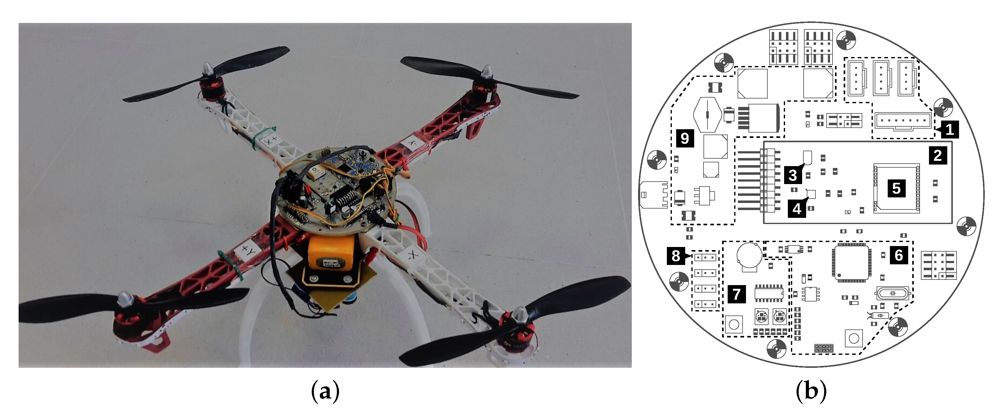

Ongoing and completed projects
Theoretical Neuroscience (ongoing)

In this work we try to model and theoretically explain the decay of dendritic spines that’s observed in adult mice and human hippocampus as described in the paper [1] where the authors observed the half-life of the spine connections to be 3-4 weeks. This is of great intellectual interest because what it essentially means is that there’re some connections that we can get rid of without the loss affecting our day-to-day activities.
We’re trying to model and explain this phenomenon by exploring how the performance (correct input-output mapping) of a single-layer feed-forward neural network changes when we remove some of the weights.
Our efforts are inspired from the work mentioned in [2] which explores the hardness in finding solutions of a binary single-layer feed-forward perceptrons as we increase the number of samples to fit (or keep adding more constraints). The basic idea is to select an equilibrium solution sampled from the Boltzmann measure, and then explore the solution space around this selected equilibrium solution by analyzing the entropy landscape in the vicinity of the reference equilibrium solution.
This framework was originally introduced as the name of Franz-Parisi potential to study the metastable state structure for discontinuous mean-field spin glasses (e.g., p-spin spherical spin glass), where the potential has the physical meaning of the free energy cost to keep a system at a temperature with a fixed overlap from an equilibrium configuration at a different temperature. In [2] the Franz-Parisi potential is interpreted in terms of the entropy function to describe the solution space, and they show that a quenched computation (average over the choice of the reference equilibrium solution) of the potential in the zero temperature limit is possible and provide important physical insights towards understanding the geometrical organization of the solution (weight) space.
While [2] tries to explore the solution space within a certain hamming distance of the equilibrium point, we’re trying to explore the area around solution space represented by a linear transformation (connection decay) of the equilibrium point. We intend to explore the Franz-parisi potential (entropy density) around such transformed points and hypothesise that there exists a transformation such that it maintains a positive potential thus helping us theoretically understand the nature of decay of dendritic spines.
[1]:Impermanence of dendritic spines in live adult CA1 hippocampus
[2]:Origin of the computational hardness for learning with binary synapses
Global convergence of model-free simultaneous control (completed)
Oftentimes, in reality, control systems don’t behave as they’re theoretically modelled. And sometimes the changes can be too abrupt for the system to be expected to observe a fixed prior behaviour, component failures and repairs or for example environmental disturbances or changes in subsystems interconnections or a change in network based models, like air-transportation or disease epidemics due to some confounders, etc. In some cases these systems can be modelled by discrete-time linear systems with state-transition coming from an underlying Markov chain; like for instance in the case of ship steering the ship dynamics vary according to the speed, which can be measured from appropriate speed sensors, and autopilots for these systems can be improved by taking these changes into account.
Also, knowing the system dynamics before hand might not be the fastest and most autonomous way to go about finding optimal policy, especially in systems where the states alter dynamically. And in our work [1] we’ve shown that optimal policy can simply be achieved by gathering data and statistics, and hence it’s some sense more autonomous. [2] show model-free convergence guarantees for LQR systems, but the results can’t be trivially extended to MJLS because of the dynamic switch between states instead of being static. [3] explores MJLS policy convergence when the system parameters are known, and thus our paper tries to bridge this gap between model-given MJLS [3] and model-free LQR [2]
Summary of our contributions in [1]:
- We provide an algorithm for estimating gradient and state correlation matrix used in gradient descent and natural gradient descent for policy iteration in model-free MJLS case.
- We prove intermediary results showing that a sufficient time horizon is enough for a good estimated of concerned quantities, and that variations resulting due slight perturbations in policy and transition probabilities can be bounded.
- We then prove policy convergence using both gradient descent and natural gradient techniques.
- We also provide simulation studies to corroborate our convergence claims.
[1]:Global Convergence Using Policy Gradient Methods for Model-free Markovian Jump Linear Quadratic Control
[2]:Global Convergence of Policy Gradient Methods for the Linear Quadratic Regulator
[3]:Policy Optimization for Markovian Jump Linear Quadratic Control: Gradient-Based Methods and Global Convergence
Online learning and streaming under memory constraints (completed)
With multi-arm bandits having abundant applications in healthcare, finance, dynamic-pricing models, recommender systems, etc. it makes sense to think about budgetary and resource constraints, especially in settings where the number of levers are large. People have proposed a bandit algorithm for making online portfolio choices via exploiting correlations among multiple arms, now given that high frequency trading firms operate on large volumes of data frequently they can surely benefit from near optimal performance in resource constraint setting. Even in social good problems like drug-testing, and other practically relevant tasks like crowd-sourcing that are modelled using multi armed bandits it makes economic sense to explore options that operate near optimally without storing entire statistics of the system.
To that end, in [2] the authors have established an instance independent, T= total time horizon, O(sqrt(Tlog(T))) bound with O(log(T)) streaming passes. Our objective thus was to explore the domain between log(T) and one pass, and try to minimise the regret accumulated while also reducing the number of passes to the extent that we can.
Our contributions in [1]:
- We propose a variation of Algorithm-1 in [2] which accrues O(sqrt(Tlog(T))) regret with log(log(T)) passes instead of log(T) passes.
- Using the analysis devised for above result we then propose a 2-pass-algorithm, with some instance dependent initial conditions, with O(sqrt(Tlog(T))) regret.
- Simulations to corroborate the results.
- We also include an instance dependent two-pass-hybrid algorithm with some prior information about the system which incurs a log(T) regret.
[1]:On reducing the order of arm-passes bandit streaming algorithms under memory bottleneck
[2]: Regret Minimisation in Multi-Armed Bandits Using Bounded Arm Memory